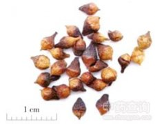

水翁花

拼音
Shuǐ Wēnɡ Huā
别名
水香、酒翁、土槿皮[树皮名—广东]
来源
为桃金娘科水榕属植物水榕Cleistocalyx operculatus （Roxb.）Merr. et Perry的花蕾，其叶、根、树皮亦供药用。初夏采集带花蕾的花序，淋湿堆放数日，稍晒后再堆放闷1～2天，然后再晒再闷，直至全干变成黑色。夏、秋采伐干枝，去掉粗皮及木心，留二层皮晒干。夏季采叶晒干。
生境分布
喜生于水边，常栽于村落旁。分布广东、广西等地。产广东、广西等地。
药材特点
水翁（《岭外代答》），又名：水榕。 乔木，高达15米。小枝近圆柱形或四角形，秃净。叶对生，阔卵状矩圆形或椭圆形，长8～20厘米，先端渐尖，基部钝成渐狭，近革质，秃净，干时下面常有黑色斑点，侧脉8～12对；叶柄长1～1.5厘米。花小，绿白色，近无柄，为广歧的聚伞花序；萼钟形，长约3毫米，近截头状，萼肢延伸成帽状；花瓣5，合生成帽状，顶尖，有腺点；雄蕊多数，离生；子房2室，花柱线形。核果状浆果，球形，宽约7毫米，熟时紫黑色。花期夏季。 本植物的树皮（水翁皮）、叶（水翁叶）亦供药用，各详专条。
性状
干燥花蕾呈卵形或球形而两端尖，长约4～6毫米，径约2～3毫米，皱缩，下半部为棕黑色的倒钟形或杯形的萼简，上半部帽状，为5枚合生的花瓣，浅棕黄色。除去帽状体，可见重叠的雄蕊，花丝棕黑色，中央有1锥形花柱。质干硬。气微香，味苦。以黄黑色，无枝梗者为好。
性味
《岭南采药录》："味苦，性寒。"
功能主治
苦，寒。
用法用量
清暑解表，去湿消滞，消炎止痒。花蕾：感冒发热，细菌性痢疾，急性胃肠炎，消化不良。根：黄疸型肝炎。树皮：外用治烧伤，麻风，皮肤瘙痒，脚癣。叶：外用治急性乳腺炎。
化学成分
花含黄酮甙、酚类、氨基酸。
药理作用
1：无药理作用数据
摘录
《全国中草药汇编》